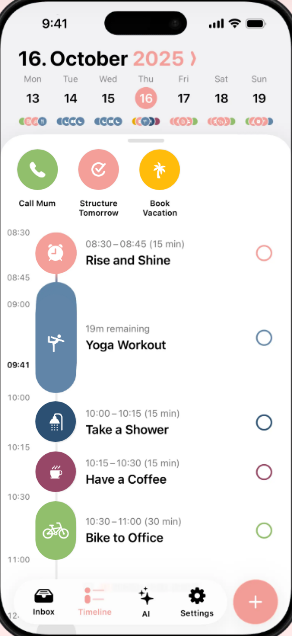
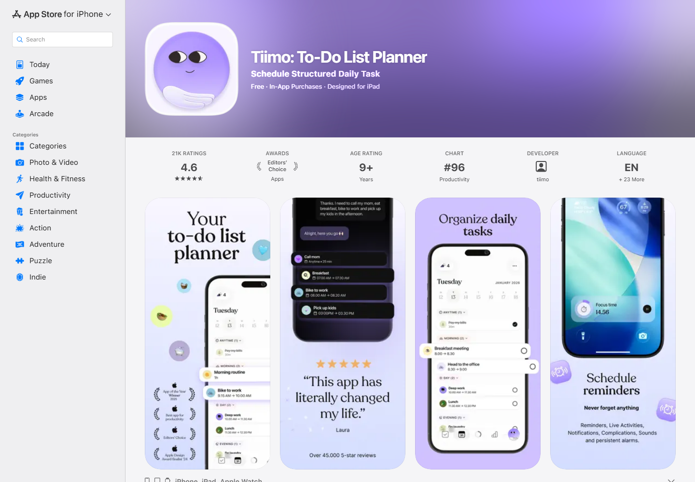
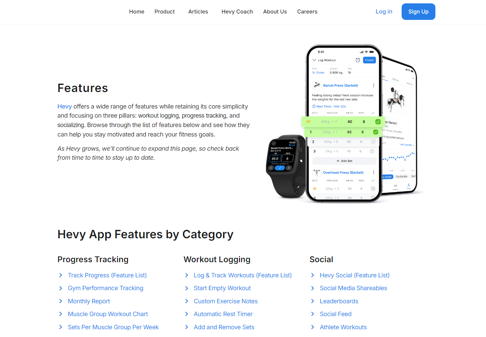
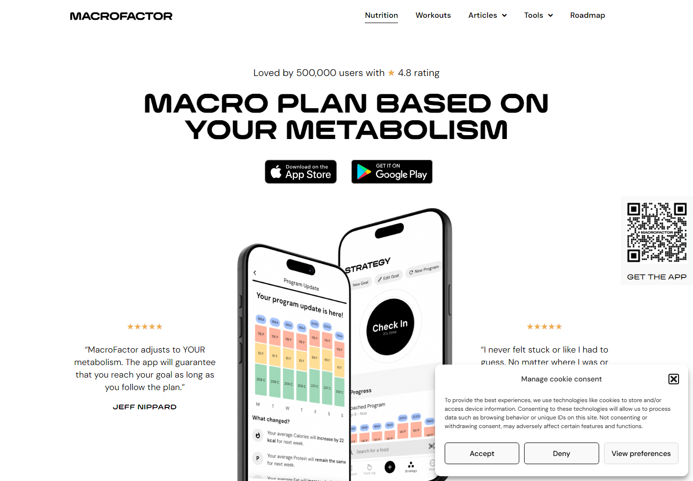
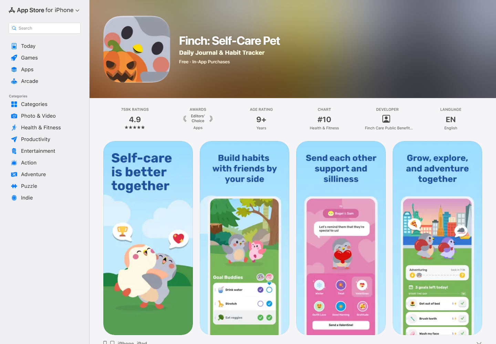
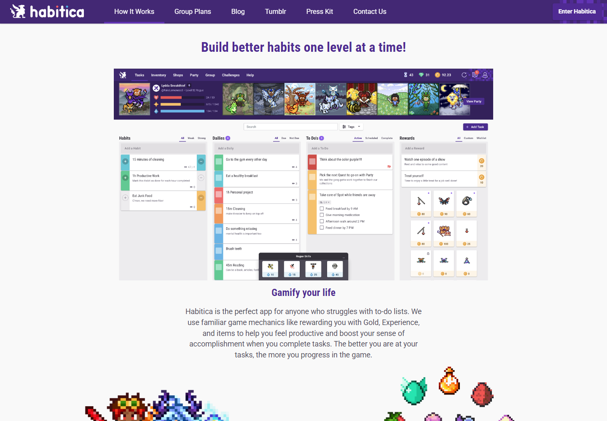
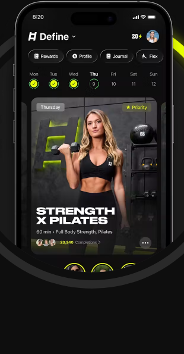
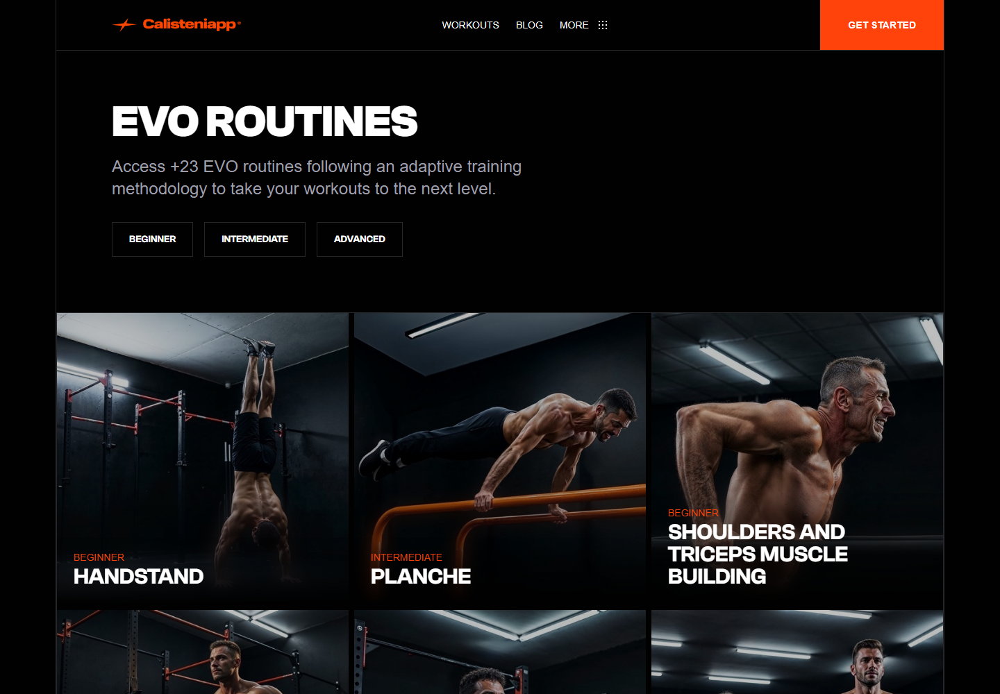
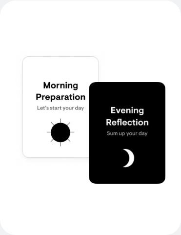
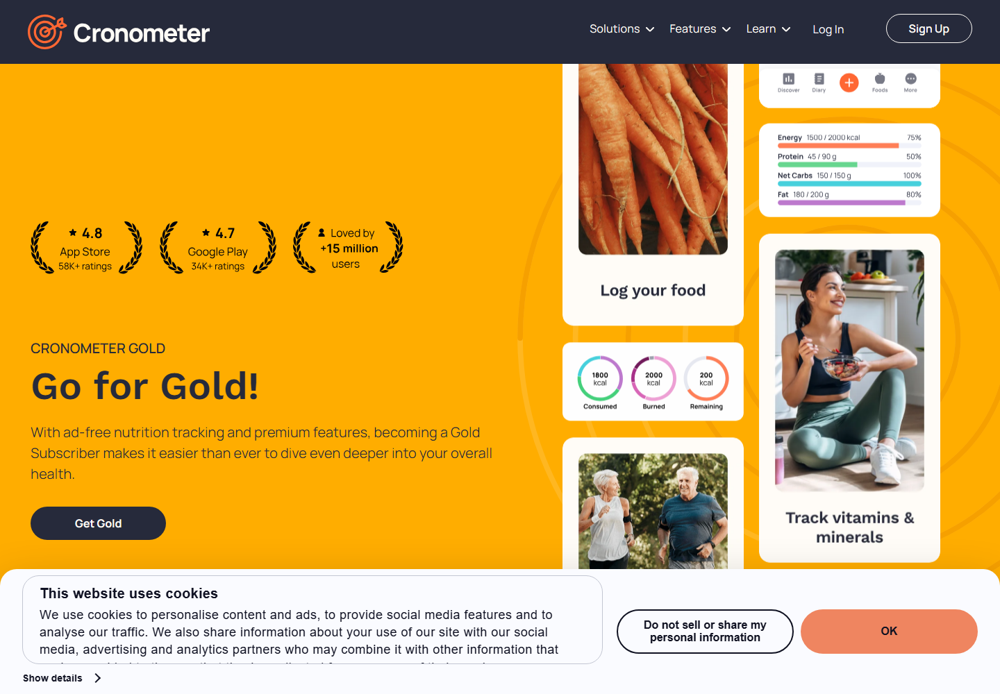

Planning · Published app screen
Structured
Time labels, duration, active-session progress, completion circles and one add button.
Stoic Body: Use the compact timeline; add visible conflicts and linked goals.
Official reference ↗Stoic Body / Phase 1 expansion / 04 October 2026
A local research board showing public competitor interfaces and the ideas proposed for Stoic Body. These are reference captures, not Stoic Body prototypes or independently tested native apps.
Click any image to view it at full size. Published screens may be promotional or version-specific. Cookie notices and source conflicts are retained in the evidence. Revenue, downloads, awards and ratings are separate measures.
10 references shown

Planning · Published app screen
Time labels, duration, active-session progress, completion circles and one add button.
Stoic Body: Use the compact timeline; add visible conflicts and linked goals.
Official reference ↗
Planning · App Store preview
Store presentation groups planning and focus features into phone-screen previews.
Stoic Body: Use clear task decomposition and an accessible focus view; exact native flow untested.
Official reference ↗
Fitness · Published app screen
Previous values sit beside current sets, reps and load; completion highlights the row.
Stoic Body: Use this information hierarchy for quick logging, with offline recovery.
Official reference ↗
Nutrition · Published app screen; partly occluded
Program updates explain changes alongside a Strategy check-in. Cookie banner obscures the lower right.
Stoic Body: Make weekly changes inspectable; distinguish estimated trends from observed measurements.
Official reference ↗
Game · App Store preview
Companion art and small goal checklists connect daily actions with visible progress.
Stoic Body: Provide optional emotional rewards and supportive return after missed days.
Official reference ↗
Game · Published web-app screen
Habits, Dailies, To-Dos and Rewards occupy separate columns under character statistics.
Stoic Body: Reuse the progression principle; keep the phone Today view simpler and omit missed-day damage.
Official reference ↗
Fitness · Published app screen
Weekly completion indicators sit above a prominent recommended workout card.
Stoic Body: Make the next session clear; coordinate it with the rest of the user's day.
Official reference ↗
Fitness · Public library interface
Ability filters and visually distinct skill cards organize training choices.
Stoic Body: Use prerequisite and level labels; retain a less image-heavy accessible list option.
Official reference ↗
Reflection · Feature illustration
Morning preparation and evening reflection are visually separated.
Stoic Body: Use brief contextual reflection with verified quotation provenance.
Official reference ↗
Nutrition · Feature illustration; partly occluded
Energy/macro summaries and nutrient detail are presented as distinct benefits. A cookie notice remains.
Stoic Body: Show a simple daily summary with reliable nutrient detail one level deeper.
Official reference ↗